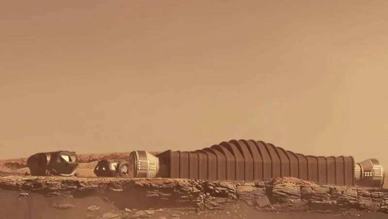
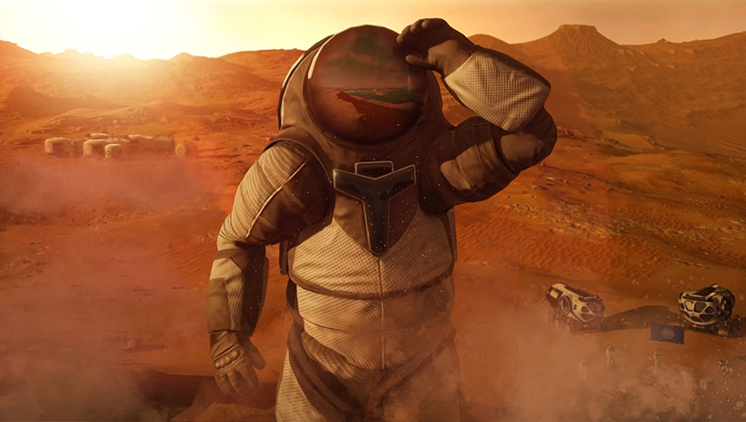

The Mars Experience
The Mars experience is an exciting and groundbreaking journey into the future of space exploration. As humanity pushes the boundaries of technology, the idea of visiting or even settling on Mars has become more than just science fiction. With missions like NASA's Perseverance rover exploring the Martian surface and private companies like SpaceX working on reusable rockets and plans for crewed missions, the dream of stepping foot on Mars is inching closer to reality. The prospect of humans landing on the Red Planet has sparked a wave of curiosity, innovation, and hope for the future.  One of the most fascinating aspects of the Mars experience is the planet's stark, alien landscape. Mars is a world that is both familiar and strange, with features such as massive volcanoes, deep canyons, and vast plains. Despite its surface being inhospitable for human life, Mars shares many similarities with Earth, such as the presence of seasonal weather changes, polar ice caps, and even evidence that liquid water once flowed there. The idea of exploring such a place, studying its geology, and searching for signs of past life offers an unprecedented opportunity for scientific discovery. Living on Mars, however, would come with its unique challenges. The atmosphere on Mars is about 100 times thinner than Earth's, composed mostly of carbon dioxide, making it impossible to breathe. Temperatures on the planet can drop to extreme lows, and radiation from the Sun poses a significant threat to human health. For any human mission, life support systems that provide breathable air, water, and food would need to be self-sustaining and efficient. Scientists are working on technologies to address these challenges, including creating habitats that can shield astronauts from radiation and finding ways to produce food and oxygen from local resources.  Beyond survival, the Mars experience would be an incredible test of human adaptability and resilience. Astronauts would live in isolated conditions, relying on advanced technology to stay connected with Earth while facing the psychological challenges of long-duration space travel. The journey itself could take several months, and astronauts would need to be mentally prepared for the emotional strain of being so far from home. But the sense of adventure and the pursuit of knowledge would likely make these hardships worthwhile, as they become pioneers in one of the greatest explorations in human history. Ultimately, the Mars experience is about more than just exploring a distant planet. It symbolizes humanity’s drive to explore the unknown, to push the limits of what is possible, and to ensure the survival of our species beyond Earth. While a permanent human presence on Mars is still a distant goal, each step in the journey brings us closer to understanding our place in the cosmos. Whether it's through robotic exploration or the eventual landing of humans, the Mars experience will be a testament to human ingenuity, perseverance, and our relentless curiosity about the universe.